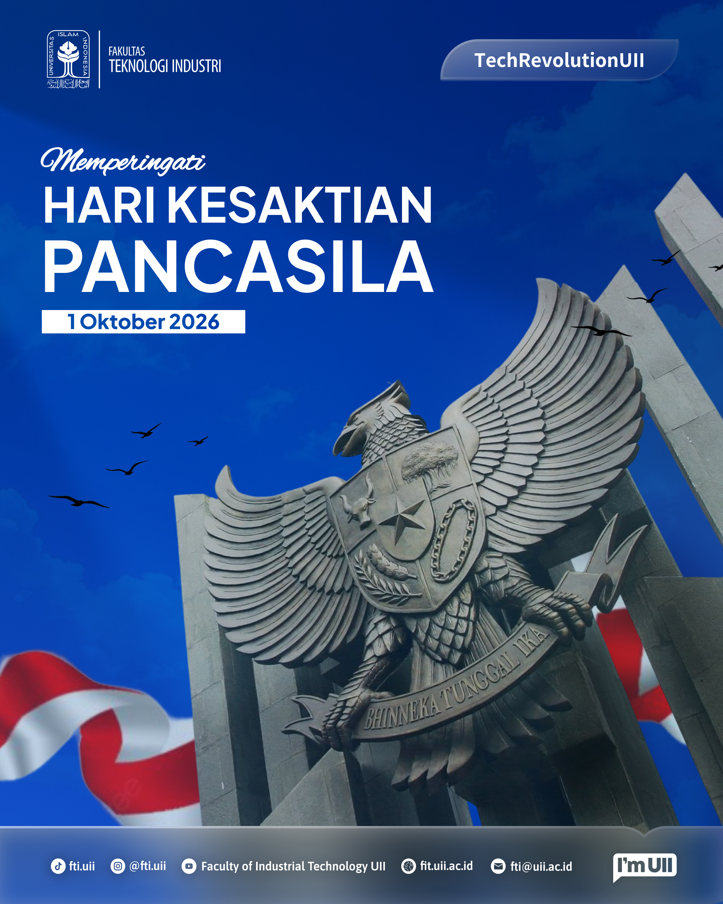
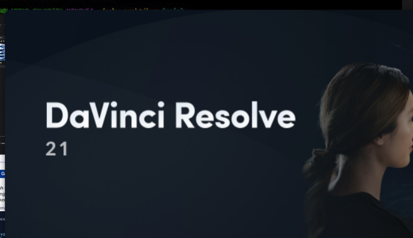
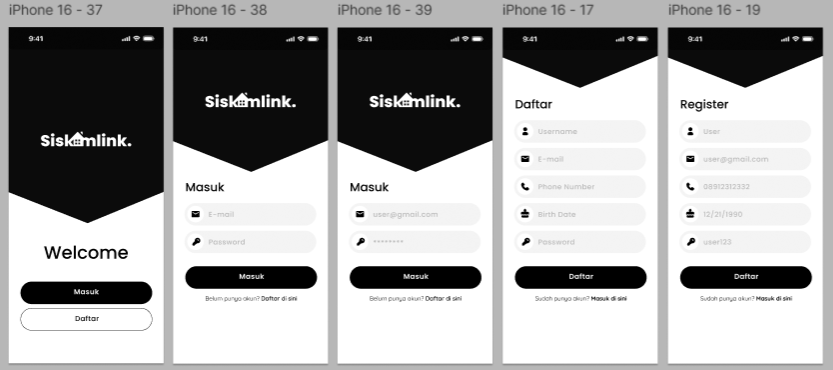

HTML5
HTML5 adalah versi terbaru dari HTML yang digunakan untuk membuat website modern, interaktif, dan responsif, dengan dukungan multimedia tanpa plugin tambahan.
HTML
Buka
Halo! Perkenalkan Namaku Ahmad Azzuri Pakalessy. Saya adalah Mahasiswa Semester 3, Jurusan Informatika Universitas Islam Indonesia.

HTML5 adalah versi terbaru dari HTML yang digunakan untuk membuat website modern, interaktif, dan responsif, dengan dukungan multimedia tanpa plugin tambahan.

CSS3 (Cascading Style Sheets 3) adalah versi terbaru dari CSS yang dirancang untuk mendukung perkembangan teknologi web yang lebih pesat. CSS3 menawarkan berbagai fitur baru, termasuk.

Flexbox adalah model layout CSS yang memungkinkan pengaturan elemen secara fleksibel dalam satu arah, baik horizontal maupun vertikal, untuk membuat layout responsif dan rapi.

Grid adalah pola garis yang membentuk kisi-kisi atau jaringan, digunakan untuk menyusun elemen secara teratur dalam berbagai konteks seperti desain, peta, listrik, dan fotografi.

Design Feed untuk Instagram FTI UII hari Pancasila

Design untuk Statistika Magister

Mengedit video

UIUX - Kala. Aplikasih berbasis AI yang mentrack mood sehari hari.

Aplikasih kesehatan

UIUX - Siskamling. Aplikasih untuk masyaratkat
| Pertemuan | Topik | Perkakas | Status | Nilai | Catatan |
|---|---|---|---|---|---|
| P4 | CSS Token dan Tema | VS Code | Selesai | — | Tema gelap berfungsi |
| P5 | Flexbox dan Grid | DevTools | Selesai | — | Galeri auto-fit |
| P6 | Responsif Mobile-First | Mode perangkat | Selesai | — | Diuji tiga lebar |